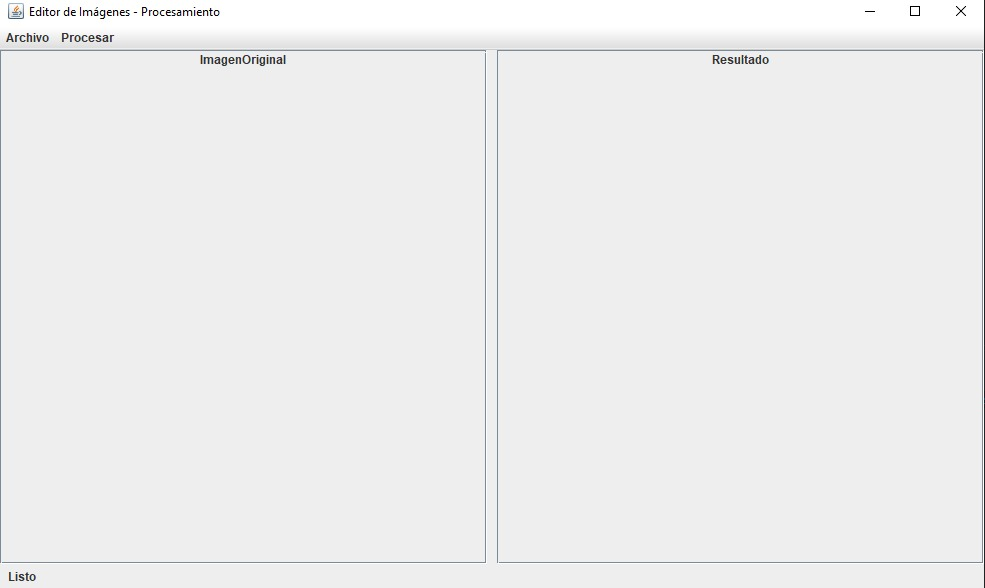
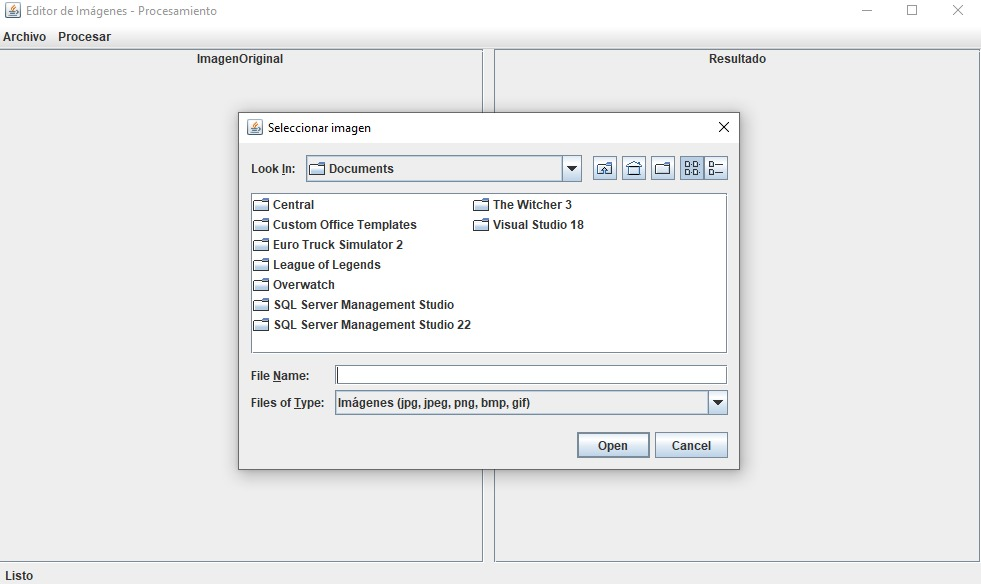
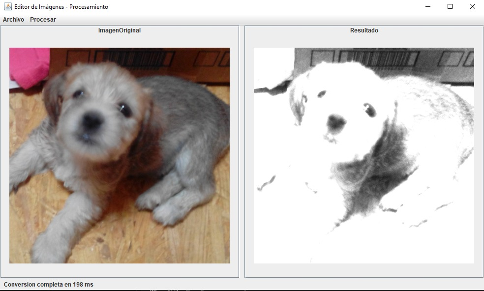
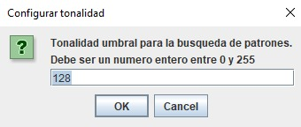
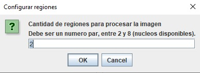

Create a UI user-friendly, very intuitive and easy to use was a feature included.

The archives management, reading files from the file explorer was an indirect technologie to include in this project allowing you load images in differents formats.

With this I also learn how to manage images in Java reading pixels from one image copying each one of them and recreate the original image to create a copy then work with the copy to avoid use the original one.
The gray-scale conversion was maded applying a formula which was multiply each RGB channel value by a specific number to convert the original intro gray-scale.

Then the search based on tonality, the user inserts a value to that tonality which must be between 0 and 255, and with this value each pixel is compared if its higher verify the neightbord pixels to see if also are higher and detect a pattern. And finally if a pattern is detected that pixels will be painted in red highlighting the pattern

Working with threads also was a feature included in this project allowing a efficient processing system, this was maded dividing the image in different pair regions and one thread will be asigned to each region. This cannot be directly seen by the user, but it becomes evident through the processing speed.

All of this counts with their own validation avoiding wrong working by the user.